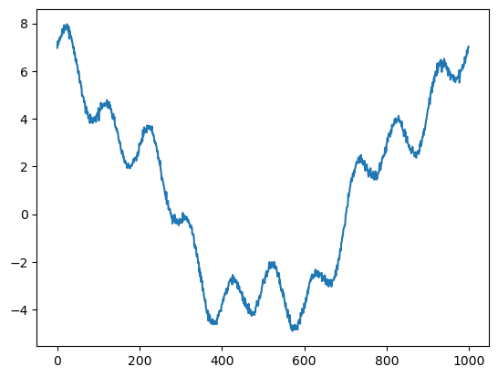
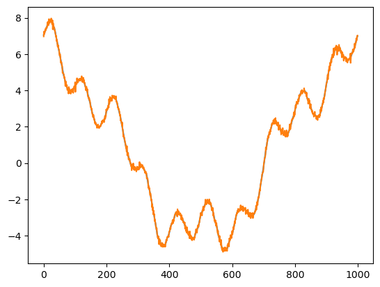
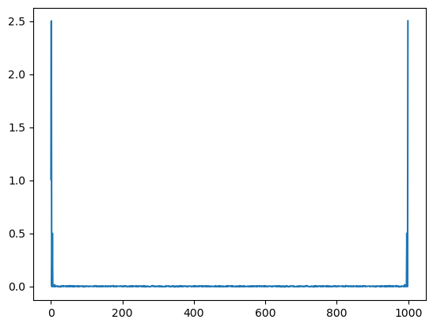

Discrete Fourier Transform#
import numpy as np
from matplotlib import pyplot as plt
def fourier(y, number_of_harmonics):
x = np.matrix(np.arange(0,np.size(y)))/np.size(y)*2*3.14159
#
#print(x)
n = np.matrix(np.arange(0,number_of_harmonics))
omega = x.T.dot(n)
cos_coef = np.matrix(y).dot(np.cos(omega))
sin_coef = np.matrix(y).dot(np.sin(omega))
cos_coef = cos_coef/np.size(y)*2
sin_coef = sin_coef/np.size(y)*2
cos_coef[0,0] = cos_coef[0,0]/2
reconstruct = cos_coef.dot(np.cos(omega).T)+sin_coef.dot(np.sin(omega).T)
return cos_coef,sin_coef, reconstruct, omega
x = np.linspace(0,2*3.14159,1000)
y = 1*np.cos(0*x)+5*np.cos(x)+np.cos(4*x)+np.sin(10*x)+np.random.normal(0,0.1,1000)
plt.plot(y)
wave_number = 100
cos_coef,sin_coef,reconstruct, omega = fourier(y,wave_number)
plt.figure()
plt.contourf(np.cos(omega))
# plt.scatter(np.arange(0,wave_number),np.array(cos_coef),s=40)
# plt.scatter(np.arange(0,wave_number),np.array(sin_coef),s=40)
plt.figure()
plt.plot(reconstruct[0,:].T)
plt.plot(y)
print('cos coef=',cos_coef)
print('sin coef=',sin_coef)
plt.figure()
plt.plot(cos_coef)
cos coef= [[ 1.00776846e+00 5.00257823e+00 -3.44276862e-03 1.80689585e-03
9.99595301e-01 -3.38058763e-03 -3.47944486e-03 1.93352959e-03
6.44649975e-03 5.14832854e-04 3.03384918e-02 -5.22828831e-03
-2.17991855e-03 3.00455009e-03 -2.08678817e-03 3.17099572e-04
2.63726901e-03 1.30979640e-03 6.22366472e-03 2.49383311e-04
-7.26649609e-03 -6.05247874e-03 4.57393258e-04 -2.51629682e-03
-2.13077992e-03 -1.12885831e-02 -4.90657860e-04 -1.01593431e-02
1.48951145e-03 4.79455504e-03 -1.05369035e-03 1.69701034e-03
2.47651676e-03 -2.46849278e-03 1.17552557e-02 1.84142941e-04
-2.42663024e-03 2.01875071e-03 4.30113353e-03 3.74678306e-03
-3.02287128e-03 -2.50016311e-03 5.00445299e-03 -3.37470792e-04
-4.91340705e-03 5.58935627e-03 -3.49347343e-03 -6.00415051e-04
3.31126317e-03 5.61449614e-03 -3.64053221e-03 -1.56449343e-03
1.33968310e-02 -1.81687571e-03 4.00339210e-03 -5.96650637e-04
7.44892661e-03 -6.41766943e-04 -1.81150026e-03 6.45636251e-03
2.58035956e-03 -4.70508475e-03 3.86127707e-03 -1.06517687e-02
3.05051394e-03 -3.26246471e-04 6.92403003e-03 -3.69485209e-03
-1.95489600e-03 -2.21449961e-03 1.23208605e-03 6.60524598e-03
1.51824937e-03 6.09343295e-04 3.12126655e-03 -6.68552038e-03
5.84916760e-03 -3.81618616e-03 -1.45431369e-03 -7.29681477e-03
3.38654564e-03 3.80657443e-03 -7.54128832e-04 -2.15956898e-03
1.67906345e-03 3.32800999e-03 1.65526286e-03 6.63753055e-03
2.45915697e-03 1.92037753e-03 -8.96109080e-03 1.02438940e-03
1.07861475e-03 -1.09253526e-02 -2.21790788e-03 3.47310897e-03
2.50318334e-04 7.44769269e-04 -1.76691716e-03 -4.13330285e-03]]
sin coef= [[ 0.00000000e+00 -6.50812746e-03 -1.49819689e-03 2.07629541e-03
-1.32330418e-02 5.42699082e-03 1.98266725e-03 2.49120153e-03
5.67680164e-03 6.97542141e-03 9.98189889e-01 -1.21133844e-02
-2.71842083e-03 -5.14642488e-04 -5.60488703e-03 -6.68758150e-03
-4.30426226e-03 -4.11955033e-03 2.48117309e-03 2.64519677e-03
1.83179790e-03 -8.17670549e-03 -1.26886138e-03 4.56697013e-03
-5.94832717e-03 -7.58268782e-03 -2.96165851e-03 -3.73286972e-04
2.19541649e-03 8.40910635e-03 -7.05981427e-03 -1.23812158e-03
-1.29019817e-02 9.76282406e-03 -2.17487499e-03 -4.08956232e-03
-1.80920803e-03 -5.73593269e-03 2.68296745e-03 -5.45044751e-03
2.74542466e-03 9.23218736e-03 -3.81215900e-03 -1.41824429e-04
6.50964190e-03 -3.60181825e-03 4.28397779e-03 -7.03272424e-03
-3.54879865e-03 5.07173620e-03 7.87103083e-03 3.84611544e-03
-4.42758697e-03 -6.06682314e-03 -8.77672032e-04 -4.38619623e-03
-1.79085233e-03 -3.12892583e-03 -2.63309676e-04 2.46511471e-03
-1.42852968e-03 -3.70975709e-03 -2.70553206e-03 -9.84673109e-04
3.23929783e-03 6.54065608e-03 2.52762951e-03 -3.18776402e-04
1.99932305e-03 -4.51044849e-03 3.23878256e-03 3.12338666e-03
-2.33845596e-03 -9.71343641e-03 -6.48141483e-03 1.12539070e-03
-2.77655724e-03 9.02468196e-03 -7.72312785e-03 3.91398539e-04
4.41658357e-03 -3.53031879e-03 5.86952126e-03 -1.73826515e-03
-1.98457472e-03 -2.07076447e-03 1.82208247e-03 1.55239781e-03
-2.60785198e-03 -1.17844372e-03 -1.45560631e-03 3.99909654e-03
-4.91279031e-03 1.09902509e-03 -1.41871624e-03 8.57173236e-03
7.13060307e-03 3.53101522e-03 3.75069724e-04 7.64020033e-04]]
[<matplotlib.lines.Line2D at 0x11d73c8b0>,
<matplotlib.lines.Line2D at 0x11d73c9d0>,
<matplotlib.lines.Line2D at 0x11d73caf0>,
<matplotlib.lines.Line2D at 0x11d73cc10>,
<matplotlib.lines.Line2D at 0x11d73cd30>,
<matplotlib.lines.Line2D at 0x11d73ce50>,
<matplotlib.lines.Line2D at 0x11d73cf70>,
<matplotlib.lines.Line2D at 0x11d73c850>,
<matplotlib.lines.Line2D at 0x11d7481f0>,
<matplotlib.lines.Line2D at 0x11d748310>,
<matplotlib.lines.Line2D at 0x11d748430>,
<matplotlib.lines.Line2D at 0x11d748550>,
<matplotlib.lines.Line2D at 0x11d748670>,
<matplotlib.lines.Line2D at 0x11d748790>,
<matplotlib.lines.Line2D at 0x11d7488b0>,
<matplotlib.lines.Line2D at 0x11d7489d0>,
<matplotlib.lines.Line2D at 0x11d748af0>,
<matplotlib.lines.Line2D at 0x11d748c10>,
<matplotlib.lines.Line2D at 0x11d748d30>,
<matplotlib.lines.Line2D at 0x11d748e50>,
<matplotlib.lines.Line2D at 0x11d748f70>,
<matplotlib.lines.Line2D at 0x11d7480d0>,
<matplotlib.lines.Line2D at 0x11d7501f0>,
<matplotlib.lines.Line2D at 0x11d750310>,
<matplotlib.lines.Line2D at 0x11d750430>,
<matplotlib.lines.Line2D at 0x11d750550>,
<matplotlib.lines.Line2D at 0x11d750670>,
<matplotlib.lines.Line2D at 0x11d750790>,
<matplotlib.lines.Line2D at 0x11d7508b0>,
<matplotlib.lines.Line2D at 0x11d7509d0>,
<matplotlib.lines.Line2D at 0x11d750af0>,
<matplotlib.lines.Line2D at 0x11d750c10>,
<matplotlib.lines.Line2D at 0x11d750d30>,
<matplotlib.lines.Line2D at 0x11d750e50>,
<matplotlib.lines.Line2D at 0x11d750f70>,
<matplotlib.lines.Line2D at 0x11d7500d0>,
<matplotlib.lines.Line2D at 0x11d5cf1f0>,
<matplotlib.lines.Line2D at 0x11d5cf310>,
<matplotlib.lines.Line2D at 0x11d5cf430>,
<matplotlib.lines.Line2D at 0x11d5cf550>,
<matplotlib.lines.Line2D at 0x11d5cf670>,
<matplotlib.lines.Line2D at 0x11d5cf790>,
<matplotlib.lines.Line2D at 0x11d5cf8b0>,
<matplotlib.lines.Line2D at 0x11d5cf9d0>,
<matplotlib.lines.Line2D at 0x11d5cfaf0>,
<matplotlib.lines.Line2D at 0x11d5cfc10>,
<matplotlib.lines.Line2D at 0x11d5cfd30>,
<matplotlib.lines.Line2D at 0x11d5cfe50>,
<matplotlib.lines.Line2D at 0x11d5cff70>,
<matplotlib.lines.Line2D at 0x11d5cf0d0>,
<matplotlib.lines.Line2D at 0x11d5d81f0>,
<matplotlib.lines.Line2D at 0x11d5d8310>,
<matplotlib.lines.Line2D at 0x11d5d8430>,
<matplotlib.lines.Line2D at 0x11d5d8550>,
<matplotlib.lines.Line2D at 0x11d5d8670>,
<matplotlib.lines.Line2D at 0x11d5d8790>,
<matplotlib.lines.Line2D at 0x11d5d88b0>,
<matplotlib.lines.Line2D at 0x11d5d89d0>,
<matplotlib.lines.Line2D at 0x11d5d8af0>,
<matplotlib.lines.Line2D at 0x11d5d8c10>,
<matplotlib.lines.Line2D at 0x11d5d8d30>,
<matplotlib.lines.Line2D at 0x11d5d8e50>,
<matplotlib.lines.Line2D at 0x11d5d8f70>,
<matplotlib.lines.Line2D at 0x11d5d80d0>,
<matplotlib.lines.Line2D at 0x11d5df1f0>,
<matplotlib.lines.Line2D at 0x11d5df310>,
<matplotlib.lines.Line2D at 0x11d5df430>,
<matplotlib.lines.Line2D at 0x11d5df550>,
<matplotlib.lines.Line2D at 0x11d5df670>,
<matplotlib.lines.Line2D at 0x11d5df790>,
<matplotlib.lines.Line2D at 0x11d5df8b0>,
<matplotlib.lines.Line2D at 0x11d5df9d0>,
<matplotlib.lines.Line2D at 0x11d5dfaf0>,
<matplotlib.lines.Line2D at 0x11d5dfc10>,
<matplotlib.lines.Line2D at 0x11d5dfd30>,
<matplotlib.lines.Line2D at 0x11d5dfe50>,
<matplotlib.lines.Line2D at 0x11d5dff70>,
<matplotlib.lines.Line2D at 0x11d5df0d0>,
<matplotlib.lines.Line2D at 0x11d76d910>,
<matplotlib.lines.Line2D at 0x11d5e61f0>,
<matplotlib.lines.Line2D at 0x11d5e6310>,
<matplotlib.lines.Line2D at 0x11d5e6430>,
<matplotlib.lines.Line2D at 0x11d5e6550>,
<matplotlib.lines.Line2D at 0x11d5e6670>,
<matplotlib.lines.Line2D at 0x11d5e6790>,
<matplotlib.lines.Line2D at 0x11d5e68b0>,
<matplotlib.lines.Line2D at 0x11d5e69d0>,
<matplotlib.lines.Line2D at 0x11d5e6af0>,
<matplotlib.lines.Line2D at 0x11d5e6c10>,
<matplotlib.lines.Line2D at 0x11d5e6d30>,
<matplotlib.lines.Line2D at 0x11d5e6e50>,
<matplotlib.lines.Line2D at 0x11d5e6f70>,
<matplotlib.lines.Line2D at 0x11d5e60d0>,
<matplotlib.lines.Line2D at 0x11d5ed1f0>,
<matplotlib.lines.Line2D at 0x11d5ed310>,
<matplotlib.lines.Line2D at 0x11d5ed430>,
<matplotlib.lines.Line2D at 0x11d5ed550>,
<matplotlib.lines.Line2D at 0x11d5ed670>,
<matplotlib.lines.Line2D at 0x11d5ed790>,
<matplotlib.lines.Line2D at 0x11d5ed8b0>]



def dft(y):
y = np.asarray(y, dtype=float)
N = y.shape[0]
n = np.arange(N)
k = n.reshape((N, 1))
M = np.exp(-2j * np.pi * k * n / N)
return np.dot(M, y)/np.size(y)
plt.plot(dft(y))
y_hat = np.matrix(dft(y))
print(y_hat.dot((y_hat.conjugate()).T))
print(np.var(y))
[[14.53724577+0.j]]
13.521648506563208
/Users/Shared/miniconda3/envs/jupyterbook/lib/python3.9/site-packages/matplotlib/cbook.py:1762: ComplexWarning: Casting complex values to real discards the imaginary part
return math.isfinite(val)
/Users/Shared/miniconda3/envs/jupyterbook/lib/python3.9/site-packages/matplotlib/cbook.py:1398: ComplexWarning: Casting complex values to real discards the imaginary part
return np.asarray(x, float)

Gibbs phenomenon#
y = np.cos(0*x)+5*np.cos(x)+np.cos(4*x)+np.sin(10*x)
plt.plot(dft(y)[0:10],'k')
# maskout the data by half
y[0:500] = 0
plt.plot(dft(y)[0:10]*2)
[<matplotlib.lines.Line2D at 0x11dc549a0>]

Fast Fourier Transform#
import numpy as np
def fft(x):
N = len(x)
if N <= 1:
return x
even = fft(x[0::2])
odd = fft(x[1::2])
T = [np.exp(-2j * np.pi * k / N) * odd[k] for k in range(N // 2)]
return [even[k] + T[k] for k in range(N // 2)] + \
[even[k] - T[k] for k in range(N // 2)]
def fft_recursive(x):
N = len(x)
if N % 2 > 0:
raise ValueError("Length of input must be a power of 2")
elif N <= 32:
return fft(x)
else:
even = fft_recursive(x[0::2])
odd = fft_recursive(x[1::2])
T = [np.exp(-2j * np.pi * k / N) * odd[k] for k in range(N // 2)]
return [even[k] + T[k] for k in range(N // 2)] + \
[even[k] - T[k] for k in range(N // 2)]
def main():
x = np.random.random(1024)
#print("Input sequence:", x)
y = fft_recursive(x)
#print("FFT result:", y)
if __name__ == "__main__":
main()
def FFT(x):
"""
A recursive implementation of
the 1D Cooley-Tukey FFT, the
input should have a length of
power of 2.
"""
N = len(x)
if N == 1:
return x
else:
X_even = FFT(x[::2])
X_odd = FFT(x[1::2])
factor = np.exp(-2j*np.pi*np.arange(N)/ N)
X = np.concatenate(\
[X_even+factor[:int(N/2)]*X_odd,
X_even+factor[int(N/2):]*X_odd])
return X
# sampling rate
sr = 128
# sampling interval
ts = 1.0/sr
t = np.arange(0,1,ts)
freq = 1.
x = 3*np.sin(2*np.pi*freq*t)
freq = 4
x += np.sin(2*np.pi*freq*t)
freq = 7
x += 0.5* np.sin(2*np.pi*freq*t)
plt.figure(figsize = (8, 6))
plt.plot(t, x, 'r')
plt.ylabel('Amplitude')
plt.show()

%timeit X=FFT(x)
%timeit dft(x)
# calculate the frequency
N = len(X)
n = np.arange(N)
T = N/sr
freq = n/T
plt.figure(figsize = (12, 6))
plt.subplot(121)
plt.stem(freq, abs(X), 'b', \
markerfmt=" ", basefmt="-b")
plt.xlabel('Freq (Hz)')
plt.ylabel('FFT Amplitude |X(freq)|')
# Get the one-sided specturm
n_oneside = N//2
# get the one side frequency
f_oneside = freq[:n_oneside]
# normalize the amplitude
X_oneside =X[:n_oneside]/n_oneside
plt.subplot(122)
plt.stem(f_oneside, abs(X_oneside), 'b', \
markerfmt=" ", basefmt="-b")
plt.xlabel('Freq (Hz)')
plt.ylabel('Normalized FFT Amplitude |X(freq)|')
plt.tight_layout()
plt.show()
602 µs ± 5.76 µs per loop (mean ± std. dev. of 7 runs, 1,000 loops each)
375 µs ± 1.63 µs per loop (mean ± std. dev. of 7 runs, 1,000 loops each)
---------------------------------------------------------------------------
NameError Traceback (most recent call last)
Cell In[7], line 4
2 get_ipython().run_line_magic('timeit', 'dft(x)')
3 # calculate the frequency
----> 4 N = len(X)
5 n = np.arange(N)
6 T = N/sr
NameError: name 'X' is not defined
import numpy as np
def fft(x):
N = len(x)
if N <= 1:
return x
even = fft(x[::2])
odd = fft(x[1::2])
T = [np.exp(-2j * np.pi * k / N) * odd[k] for k in range(N // 2)]
return [even[k] + T[k] for k in range(N // 2)] + \
[even[k] - T[k] for k in range(N // 2)]
import numpy as np
import matplotlib.pyplot as plt
# Generate a sinusoidal signal with noise
t = np.linspace(0, 1, 1000)
f_signal = 5 # Frequency of the signal
signal = np.sin(2 * np.pi * f_signal * t) + 0.5 * np.random.randn(1000) # Adding noise
# Compute FFT
fft_result = np.fft.fft(signal)
frequencies = np.fft.fftfreq(len(signal), t[1] - t[0])
# Plot the original signal
plt.figure(figsize=(10, 6))
plt.subplot(2, 1, 1)
plt.plot(t, signal)
plt.title('Original Signal')
plt.xlabel('Time')
plt.ylabel('Amplitude')
# Plot the FFT result (scaled properly)
plt.subplot(2, 1, 2)
plt.plot(frequencies, np.abs(fft_result) / len(signal)) # Normalize FFT by the length of the signal
plt.title('FFT of Signal')
plt.xlabel('Frequency')
plt.ylabel('Magnitude')
plt.xlim(0, 10) # Limiting x-axis to frequencies up to 10 Hz for clarity
plt.tight_layout()
plt.show()